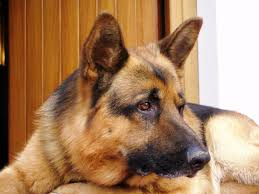
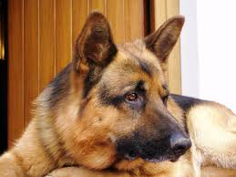

jordi rey
Pastore tedesco
 

Il pastore tedesco(anche chiamato Deutscher Schäferhund o German Shepherd Dog), secondo la classificazione cinologica Fédération cynologique internationale risponde allo standard nr. 166/10.08.2010-D (D=Germania); appartiene al 1º gruppo di razze canine (Cani da pastore e bovari) con riferimento alla sezione 1, cani da pastore con brevetto da lavoro ed impiego come Cane da utilità, da difesa e per usi molteplici.
American pitbull